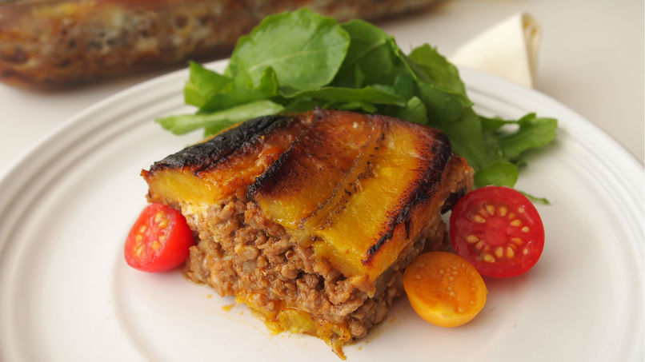

Pastelón

El pastelón es un plato casero por excelencia y combina la dulzura de los
plátanos maduros fritos con el relleno de carne cocida con el infaltable
sofrito, base de la cocina puertorriqueña. Vale decir que no hay una sola
receta, como suele suceder con estos platos tan queridos en cada uno de
nuestros países. Para cada uno de nosotros nuestras madres o abuelas tiene
la mejor receta de tal o cual platillo. Son los sabores asociados a la
memoria afectiva lo que los hace tan maravillosos. Te recomiendo que
prepares este excepcional platillo. Es una delicia.
Ingredientes
- 6 plátanos maduros
- 1/3 taza de aceite vegetal + 2 cucharadas
- 2 libras de carne molida
- 1 cucharadita de orégano seco
- 1/2 cucharadita de comino en polvo (o al gusto)
- Sal y pimienta
- 2 cucharadas de sofrito
- 2 cucharadas de pasta de tomate
- 1 sobre de sazón
- 1/3 taza de aceitunas verdes rellenas con pimiento
- 1 taza de quesillo o queso mozzarella rallado (opcional)
- 4 huevos ligeramente batidos
Instrucciones
- Pela los plátanos y corta en tajadas a lo largo.
-
Calienta 1/3 taza de aceite en una sartén y fríe los plátanos hasta que
estén bien doraditos. Escurre en papel toalla y reserva
-
En otra sartén calienta una cucharada del aceite restante y sofríe la
carne hasta que tome color. Sazona con el orégano, comino, sal y
pimienta al gusto.
-
En otra sartén con la cucharada extra de aceite sofríe el sofrito con la
pasta de tomate, el sobre de sazón, las aceitunas. Incorpora la carne
cocida y termina la cocción. Corrige la sazón a que quede a tu gusto.
Reserva.
- Precalienta el horno a 350°F.
-
Cubre un molde rectangular con mantequilla. Bate los huevos con sal y
pimienta y vierte la mitad en el fondo del molde. Luego haz una capa de
plátanos maduros fritos.
- Encima distribuye el queso rallado.
- Luego pon toda la carne.
- Tapa con otra capa de maduros fritos.
- Termina con el resto del huevo batido.
-
Hornea por 25 minutos. Retira del horno y deja reposar por unos 15
minutos antes de cortar.